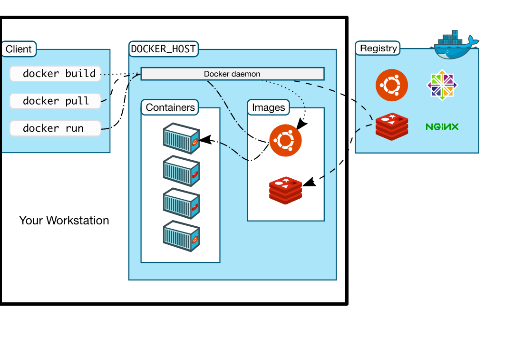
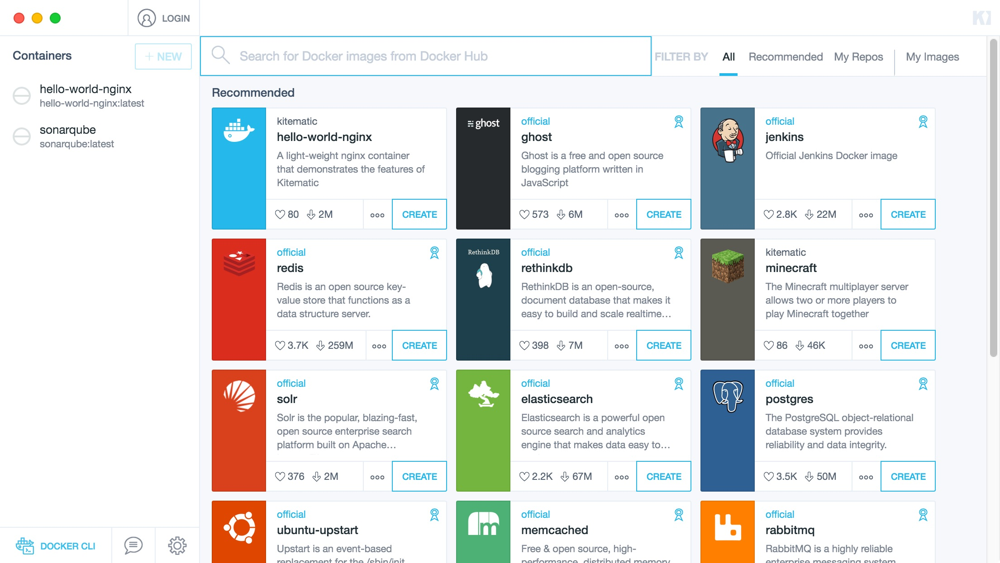

Mike Hostetler
Principal Consultant @ Object Partners, Inc
mikehoss42We usually call ourselves "OPI"
Developers use Docker to eliminate “works on my machine” problems when collaborating on code with co-workers. Operators use Docker to run and manage apps side-by-side in isolated containers to get better compute density. Enterprises use Docker to build agile software delivery pipelines to ship new features faster, more securely and with confidence for both Linux and Windows Server apps.
As a Developer, I should care because its:
Uses Containers Running on a Docker Host

docker run <name>
Wait, really?

It's hard to get to your own data and settings in the Container. The easiest way is to keep your data on your drive. To do that, you have to make a Volume. A Volume is simply a mapping from your workstation to a folder in the Container. So your data stays on your workstation.
You can also create your own Containers! Or tweak the existing ones! (not covered today).
docker run name)The CLI is more exact but I can get more information quicker in the GUI.